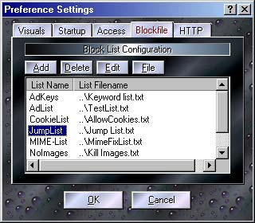

Here is where several of the Proxomitron's global settings can be changed. Click a tab and area for an explanation of its function.

The "Blockfile" Tab
Proxomitron, can use a "blockfile" (or "blocklist" depending on the weather and relative humidity). These are lists of items that a particular filter may need. Usually this is a list of URLs (web addresses) to control where a filter will be active. Proxomitron already comes with several list ready to use, but you can create additional lists of you own. For example, all Proxomitron's cookie filters use the CookieList blockfile. If you want to allow cookies on a site, you can just add it to this list. Another example is the BypassList. This list lets you bypass Proxomitron so it doesn't filter listed sites.
Adding a new URL to a list is very easy. Just copy a URL to your clipboard, right-click Proxomitron's icon in your System Tray, and select "Add to blockfile". You'll get to pick a list to add the URL to and even get a chance to clean the URL up a bit (and possibly add some wildcards) before adding it to the list.
Here you can add, delete, and edit the blockfiles available to Proxomitron's $LST(...) matching command. Besides selecting the file itself, each blockfile has a name that's separate from the actual filename. Use this list name to call the file from a filter. For example, to call the list named "BypassList", use $LST(BypassList) in your match.
You can also rename a list item. First click the item to highlight it, then click again to rename (wait a second or two first though so it doesn't look like a double-click to your PC).
Return to main index